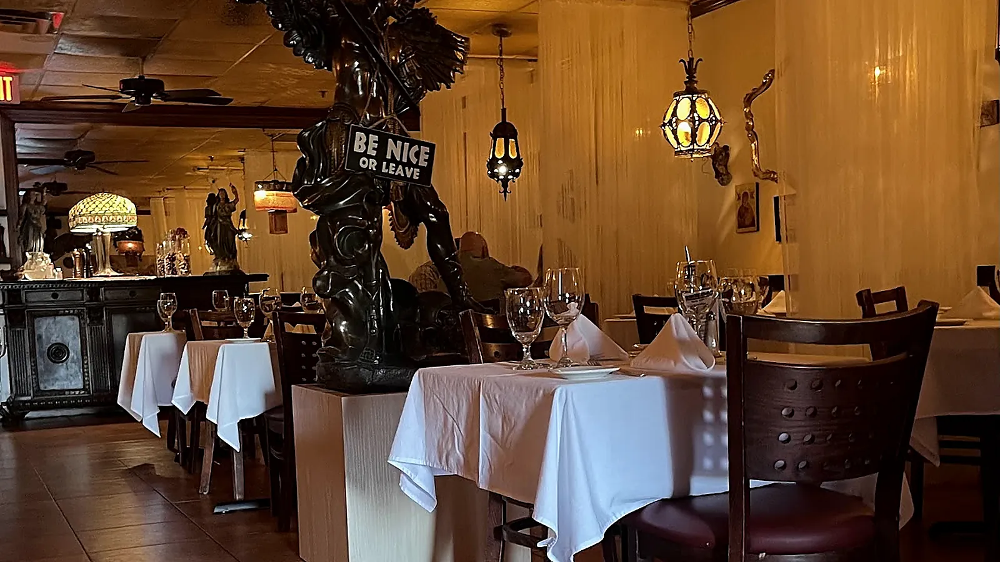
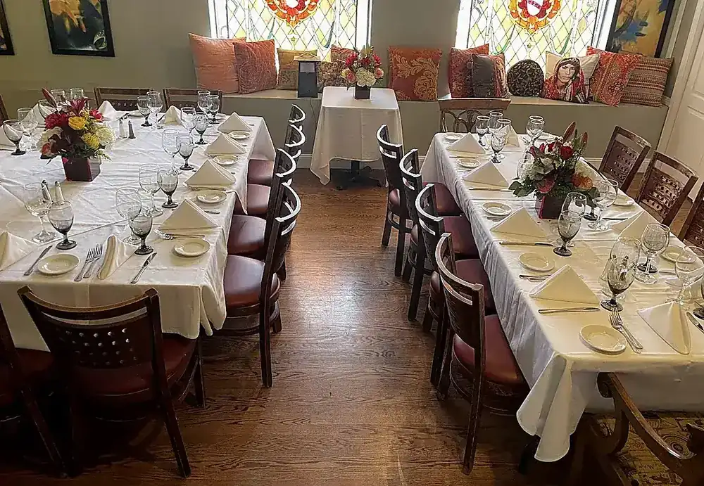
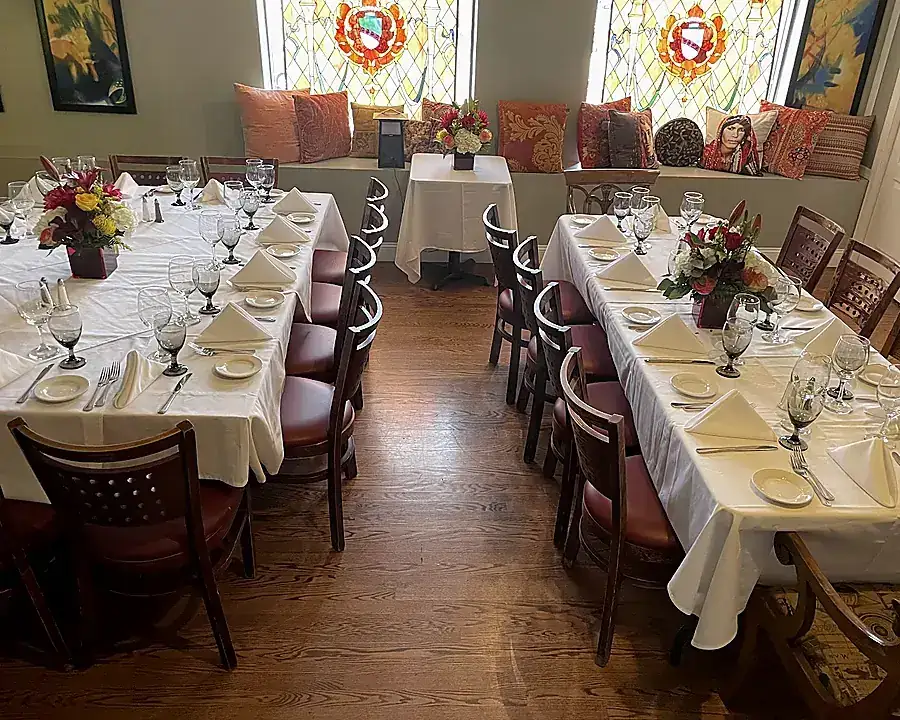
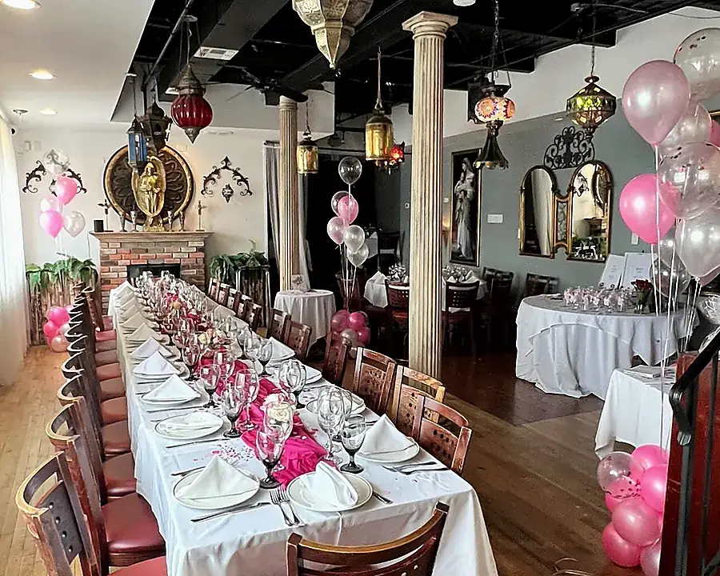
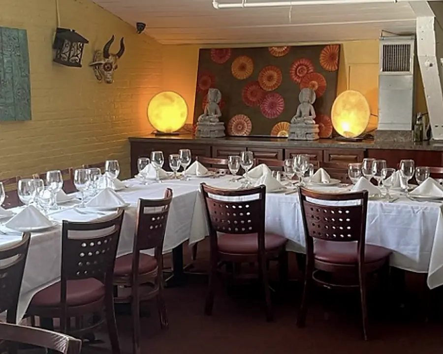

Rollettini di Melanzane
Eggplant, ricotta, mozzarella and marinara

Italian dining · Lodi, New Jersey
An eclectic, family-friendly BYOB where brunch, dinner and celebrations all have a place at the table.

The Missione experience
Sergio’s brings together Italian classics, inspired specials and a dining room with its own unmistakable character. Bring your favorite bottle and settle in.
Planning something bigger? Private rooms welcome intimate dinners, milestone celebrations and gatherings of up to 75 guests.
Plan a gathering →Rooms with character



Visit this week
Breakfast, lunch and repass service runs Tuesday through Sunday, 8am–3pm. Dinner follows from the afternoon.
Your table is waiting
Reserve online for dinner, or call for private dining and catering.